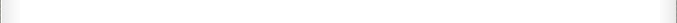

Favorites
Lib4D
CAD4D
AutoMesh
XML4D
David, X.Y. Kou, Ph.D.
Postdoc Research Fellow
Dept. of Mech Engineering,
The University of Hong Kong,
Pokfulam Road, Hong Kong
Email: kouxy@hku.hk
Tel: 852-2219-4493
Fax: 852-2858-5415
1. X. Y. Kou and S. T. Tan, "A Simple and Effective Geometric Representation for Irregular Porous Structure Modeling", Computer-Aided Design, accepted, 2010. PDF | Export Citation |
2. X. Y. Kou, Sukui Xue and S. T. Tan "Knowledge-guided inference for voice-enabled CAD", Computer-Aided Design, vol. 42, no. 6 pp.545-557, 2010. PDF | Export Citation |
3. X.Y. Kou and S.T. Tan, "An XML implementation for data exchange of heterogeneous object models", Book chapter in Advanced Design and Manufacturing based on STEP, Springer London, pp 419-438, 2010. PDF | Export Citation |
4. X.Y. Kou, X.C. Liu, and S.T. Tan, "Quadtree Based Mouse Trajectory Analysis for efficacy evaluation of Voice-enabled CAD", 2009 IEEE International Conference on Virtual Environments, Human-Computer Interfaces and Measurement Systems, pp. 196-201, Hong Kong, China, 11-13 May 2009. PDF | Export Citation |
5. Sukui Xue, X. Y. Kou and S. T. Tan, "Natural Voice-Enabled CAD: Modeling via Natural Discourse", Computer-Aided Design and Applications, 2009. 6(1): p. 125-136. PDF | Export Citation |
6. X.Y. Kou and S.T. Tan, "Robust and efficient algorithms for rapid prototyping of heterogeneous objects", Journal of Rapid Prototyping, vol. 15, No. 1, pp.5-18, 2009. PDF | Export Citation |
7. X.Y. Kou and S.T. Tan, "Heterogeneous Object Design: An Integrated CAX Perspective", Lecture Notes in Computer Science, Heterogeneous Objects Modeling and Applications, Editors: Alexander Pasko, Valery Adzhiev, Peter Comninos, pp. 42-59, 2008. PDF | Export Citation |
8. X.Y. Kou and S.T. Tan, "Design by talking with computers", Computer-Aided Design and Applications, vol. 5(1-4), pp. 266-277, 2008. PDF | Export Citation |
9. X.Y. Kou and S.T. Tan, "A systematic approach for integrated computer-aided design and finite element analysis of Functionally-Graded-Material Objects", Journal of Materials and Design, vol. 28, no. 10, pp.2549, 2007. PDF | Export Citation |
10. X.Y. Kou and S.T. Tan, "Heterogeneous object modeling: a review", Computer-Aided Design, vol. 39, no. 4, pp.284, 2007. PDF | Export Citation |
11. X. Y. Kou and S. T. Tan, "Data Structures and Algorithms of Virtual Prototyping of Heterogeneous Objects", Computer-Aided Design and Application , Vol. 3, No. 1-4, pp.59, 2006. PDF | Export Citation |
12. X.Y. Kou, S.T. Tan and W.S. Sze, "Modeling complex heterogeneous objects with non-manifold heterogeneous cells", Computer-Aided Design, vol. 38, no. 5, pp.457, 2006. PDF | Export Citation |
13. X. Y. Kou and S. T. Tan, "A hierarchical representation for heterogeneous object modeling", Computer-Aided Design, vol. 37, pp. 307, 2005. PDF | Export Citation |
14. X. Y. Kou, S. T. Tan, and W. S. Sze, "Relation oriented modeling for heterogeneous object design", Proceedings of ASME 2005 Design Engineering Technical Conferences, September 24-28, Long Beach , California USA, 2005. PDF | Export Citation |
15. X. Y. Kou and S. T. Tan, "An interactive CAD environment for heterogeneous object design," Proceedings of ASME 2004 Design Engineering Technical Conferences, September 28-October 2, Salt Lake City, Utah USA, 2004. PDF | Export Citation |
16. X. Y. Kou and S. T. Tan, "Representation and Visualization for Heterogeneous CAD models", Computer-Aided Design and Application , Vol. 1, No. 1-4, pp.163, 2004. PDF | Export Citation |
17. Xinyu Kou, Zhong Wang, Mingzhou Chen, Shenghua Ye, "A Fully Automatic Algorithm for Region of Interest Location in Camera Calibration", Optical Engineering, vol.41, No.6, pp. 1220-1226, June 2002. PDF | Export Citation |
Download all PDFs
Use winzip or winrar to unzip.
Download Endnotes
Use winzip or winrar to unzip.
Fail to download?
Report failure and request manuscripts by email.


Copyright 2001-2010 All Rights Reserved.
Prior permission must be obtained in order to use any materials from this web. Email to request permission.
Prior permission must be obtained in order to use any materials from this web. Email to request permission.
Ph.D. thesis, Kou, Xinyu, "Computer-aided design of heterogeneous objects", The University of Hong Kong, Hong Kong, 2006